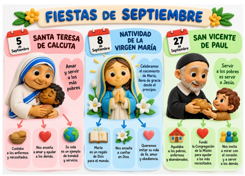
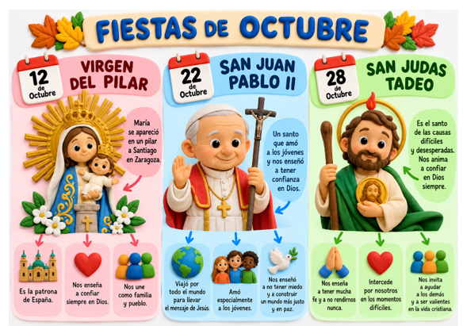
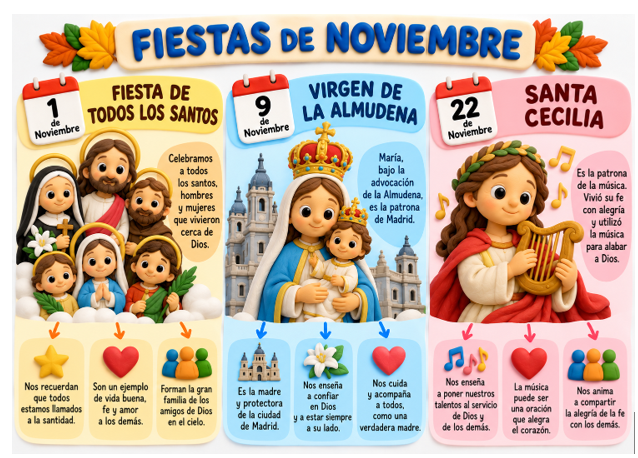

📄 Abrir material PDFCelebramos juntos
A lo largo del año recordamos acontecimientos importantes de la vida de Jesús y celebramos a María y a personas que son ejemplo de fe, amor y servicio a los demás.

📄 Abrir material PDF
📄 Abrir material PDF⭐
4. Diciembre
El mes de diciembre en la Iglesia Católica está marcado principalmente por el tiempo litúrgico del Adviento y la Navidad. Celebramos también la fiesta de La Inmaculada, La Virgen de Guadalupe, Los Santos Inocentes y San Silvestre.
📄 Abrir material PDF⭐
5. Enero
Las principales fiestas y solemnidades de la Iglesia Católica en el mes de enero son: Solemnidad de Santa María, Madre de Dios (Año Nuevo). Epifanía del Señor (Día de los Reyes Magos).Fiesta del Bautismo del Señor y Santos como Santo Tomás de Aquino y San Juan Bosco.
Se celebra después de la Epifanía.
📄 Abrir material PDF
🌾
6. San Isidro
Conocemos a san Isidro Labrador, patrón de Madrid, y recordamos su vida sencilla, su trabajo y su generosidad.
15 de mayo.
📄 Abrir material PDF
🕊️
1. Pentecostés
Celebramos la venida del Espíritu Santo sobre los apóstoles. Nos recuerda que Dios nos acompaña y nos da fuerza para compartir el mensaje de Jesús.
Se celebra cincuenta días después de Pascua.
📄 Abrir material PDF
📚 Nuestros materiales
← Volver al Año Litúrgico
Prepararemos un PDF mensual con fiestas y santos destacados de cada mes. Ahí encontaremos información, ilustraciones y actividades adaptadas a Infantil y Primaria.